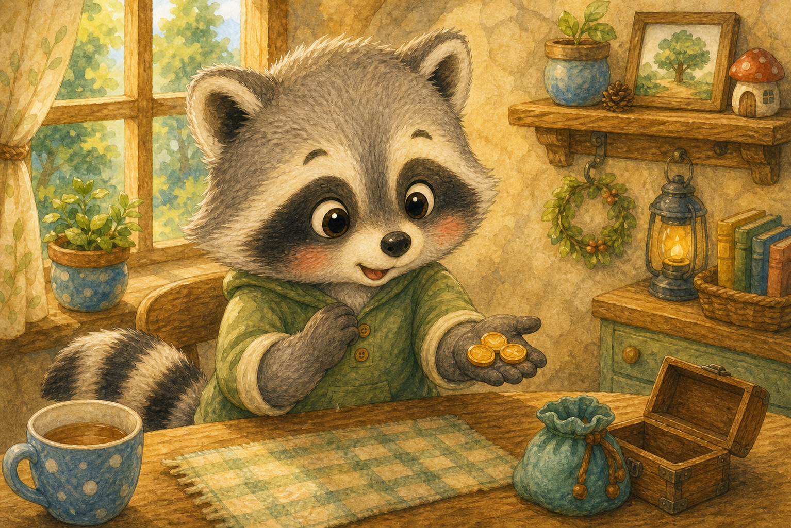
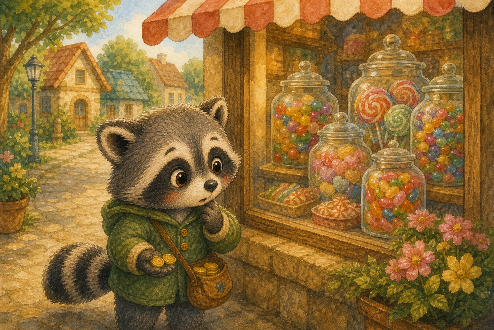
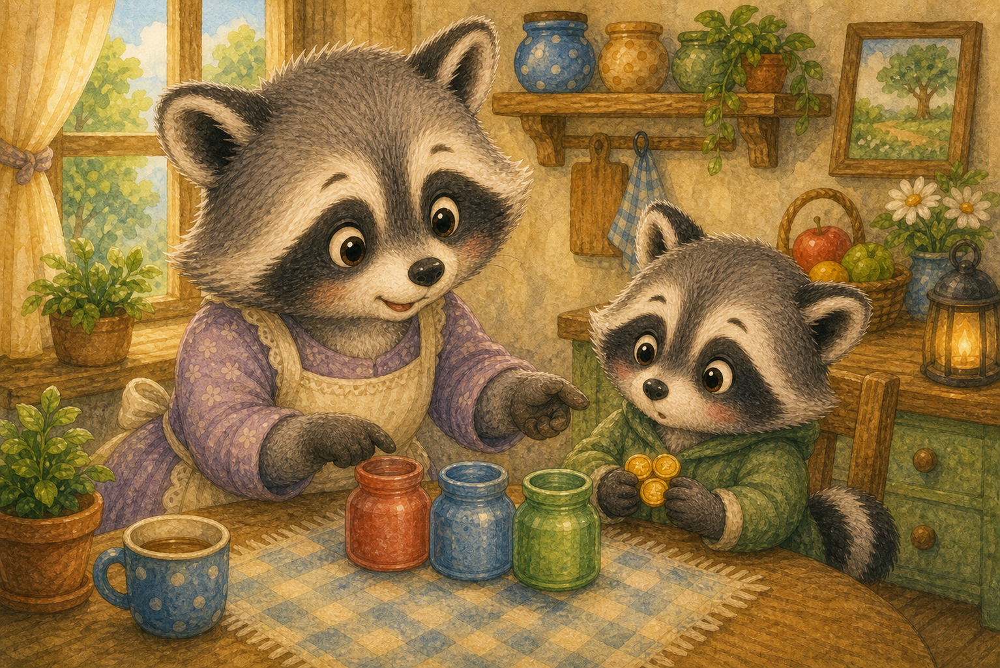
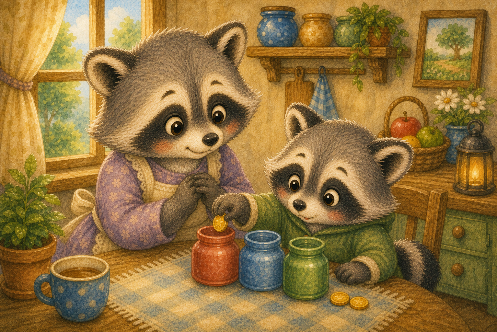
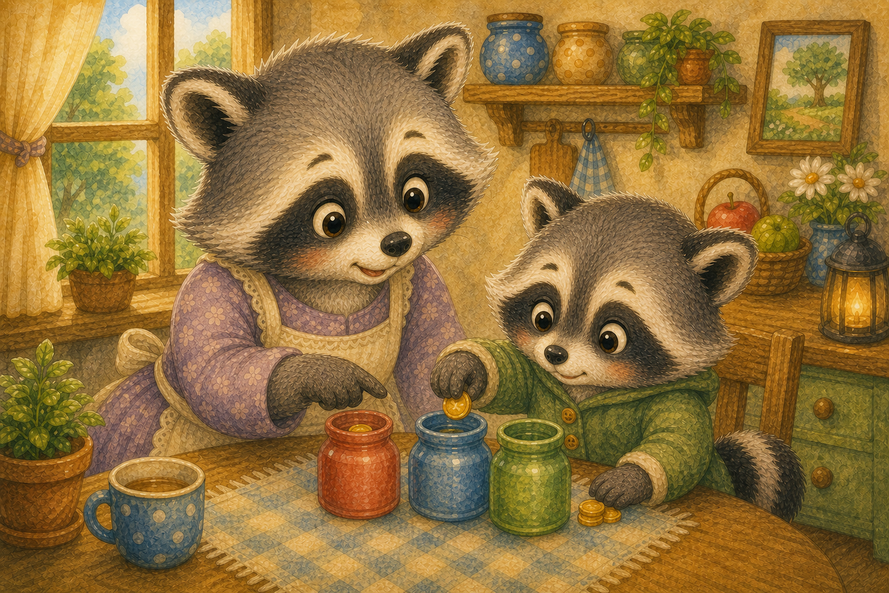
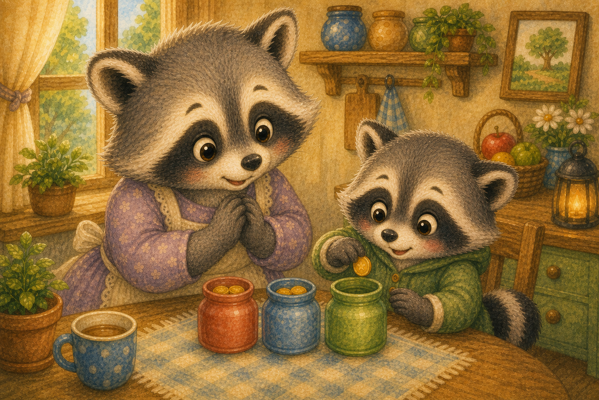
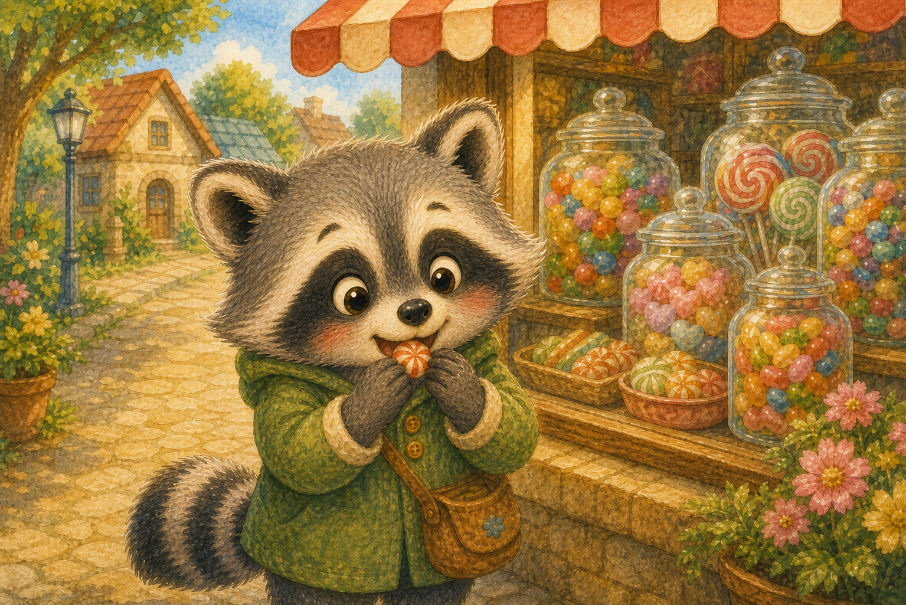
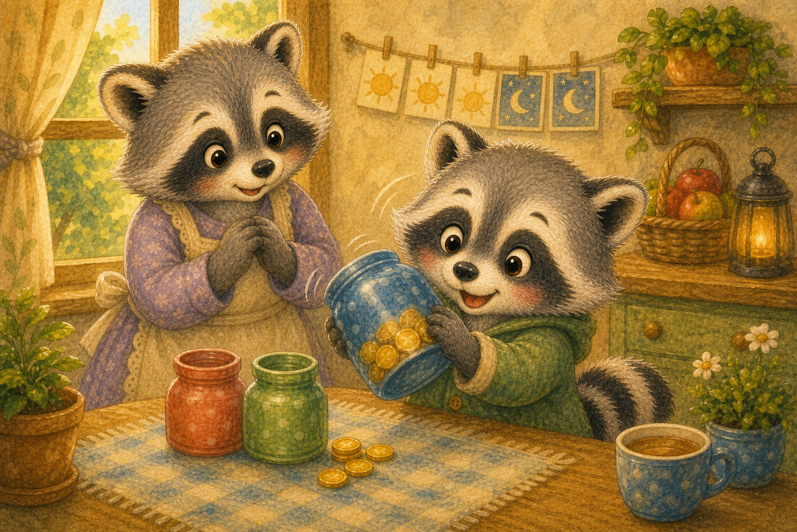
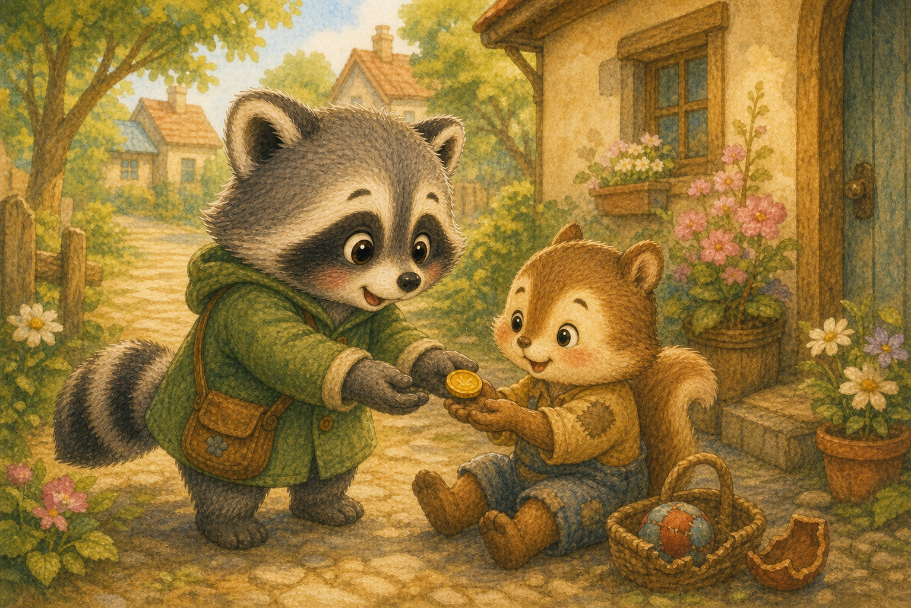
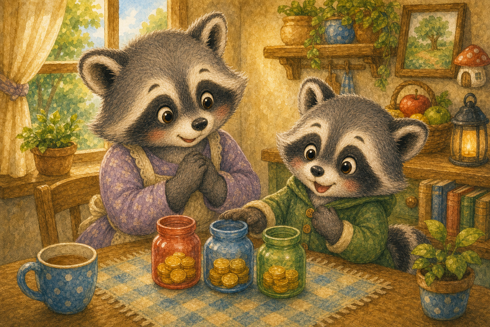

반짝이는 세 동전
아기 너구리 도리는 처음으로 용돈 세 개를 받았어요. 손바닥 위 동전이 반짝반짝 빛났지요.
"우와, 내 동전이 생겼어!"

아기 너구리 도리는 처음으로 용돈 세 개를 받았어요. 손바닥 위 동전이 반짝반짝 빛났지요.
"우와, 내 동전이 생겼어!"

가게 진열장에는 알록달록한 사탕이 가득했어요. 도리는 동전을 모두 사탕에 쓰고 싶었지요.
"전부 사탕으로 바꿀까?"

엄마 너구리는 작은 단지 세 개를 보여 주었어요. 하나는 쓰기, 하나는 모으기, 하나는 나누기 단지였답니다.
"동전을 하나씩 나눠 보면 어떨까?"

도리는 첫 번째 동전을 쓰기 단지에 쏙 넣었어요. 오늘은 작은 사탕 하나만 고르기로 했지요.
"딱 하나만 골라야지."

두 번째 동전은 모으기 단지에 넣었어요. 차곡차곡 모으면 더 오래 기다린 선물을 살 수 있대요.
"모으면 멋진 그림책을 살 수 있겠지!"

세 번째 동전은 나누기 단지에 넣었어요. 언젠가 도움이 필요한 친구에게 줄 동전이었지요.
"나누면 마음이 따뜻해진대."

도리는 쓰기 단지의 동전으로 사탕 하나를 샀어요. 하나만 먹어도 충분히 행복했답니다.
"하나여도 정말 맛있어!"

며칠이 지나자 모으기 단지가 조금 묵직해졌어요. 도리는 단지를 흔들며 뿌듯하게 웃었지요.
"조금씩 모으니 이렇게 많아졌네!"

도리는 나누기 단지의 동전을 꺼내 친구에게 건넸어요. 친구의 환한 웃음이 도리의 마음까지 밝혔답니다.
"나누니까 내 마음도 부자가 된 것 같아!"

도리는 쓰고, 모으고, 나누는 법을 배웠어요. 작은 동전도 똑똑하게 쓰면 큰 행복이 된다는 걸 알았답니다.
"나는 이제 동전을 잘 돌보는 너구리야!"